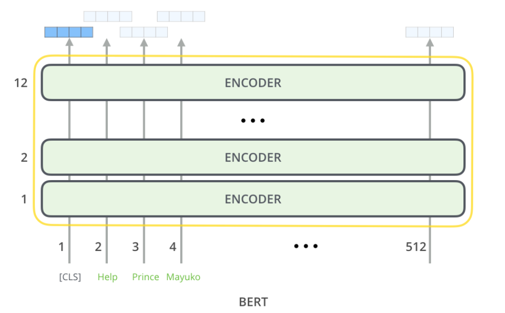
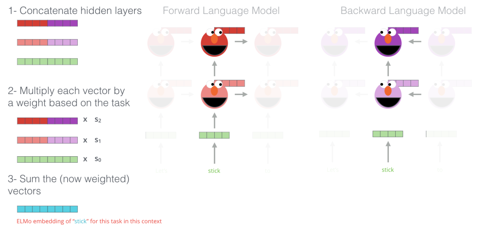
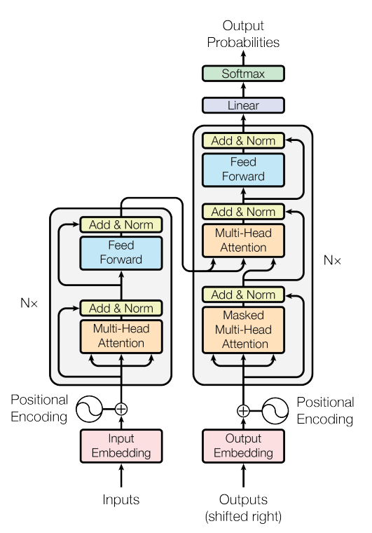
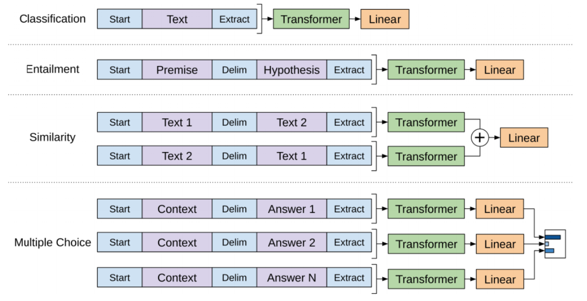
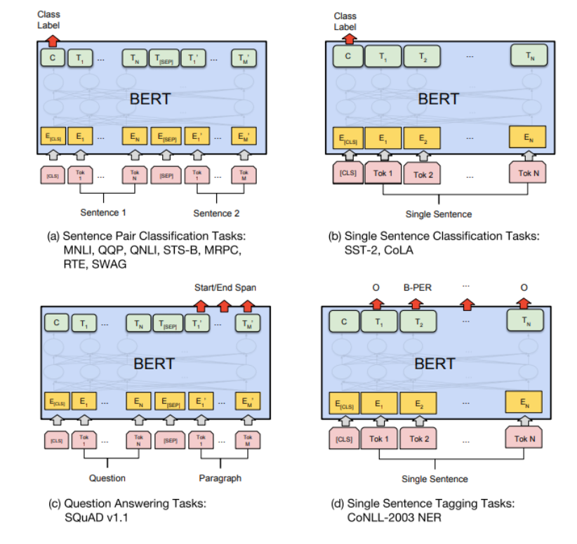
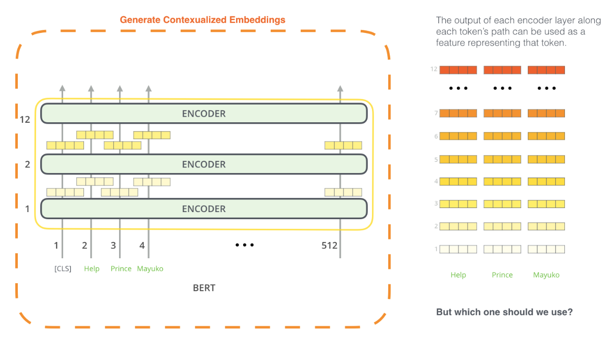

<!DOCTYPE html>
<html lang="en">

<head>
  <meta charset="utf-8" />
    
  <meta name="description" content="Bowen&#39;s Blog" />
  
  <meta name="viewport" content="width=device-width, initial-scale=1, maximum-scale=1" />
  <title>
    BERT-illustration |  Bowen&#39;s Blog
  </title>
  <meta name="generator" content="hexo-theme-yilia-plus">
  
  <link rel="shortcut icon" href="/logo.ico" />
  
  
<link rel="stylesheet" href="/css/main.css">

  
  <script src="https://cdn.jsdelivr.net/npm/pace-js@1.0.2/pace.min.js"></script>
  
  

  

<link rel="alternate" href="/atom.xml" title="Bowen's Blog" type="application/atom+xml">
</head>

</html>

<body>
  <div id="app">
    <main class="content">
      <section class="outer">
  <article id="post-BERT-illustration" class="article article-type-post" itemscope
  itemprop="blogPost" data-scroll-reveal>

  <div class="article-inner">
    
    <header class="article-header">
       
<h1 class="article-title sea-center" style="border-left:0" itemprop="name">
  BERT-illustration
</h1>
  

    </header>
    

    
    <div class="article-meta">
      <a href="/2020/03/20/BERT-illustration/" class="article-date">
  <time datetime="2020-03-20T09:55:25.000Z" itemprop="datePublished">2020-03-20</time>
</a>
      
  <div class="article-category">
    <a class="article-category-link" href="/categories/%E7%AC%94%E8%AE%B0/">笔记</a>
  </div>

      
      
<div class="word_count">
    <span class="post-time">
        <span class="post-meta-item-icon">
            <i class="ri-quill-pen-line"></i>
            <span class="post-meta-item-text"> 字数统计:</span>
            <span class="post-count">1.7k字</span>
        </span>
    </span>

    <span class="post-time">
        &nbsp; | &nbsp;
        <span class="post-meta-item-icon">
            <i class="ri-book-open-line"></i>
            <span class="post-meta-item-text"> 阅读时长≈</span>
            <span class="post-count">6分钟</span>
        </span>
    </span>
</div>

      
    </div>
    

    
    
    <div class="tocbot"></div>


    

    
    <div class="article-entry" itemprop="articleBody">
      
      

      
      <h1 id="BERT-illustration"><a href="#BERT-illustration" class="headerlink" title="BERT illustration"></a>BERT illustration</h1><h2 id="发展历史及主要想法"><a href="#发展历史及主要想法" class="headerlink" title="发展历史及主要想法"></a>发展历史及主要想法</h2><p>BERT: Pre-training of Deep Bidirectional Transformers for Language Understanding, BERT 是 Bidirectional Encoder Representations from Transformers 的缩写。这个预训练模型让 NLP 领域进入了类似于当时 CV 界的后 ImageNet 时代（大量预训练模型应用）。</p>
<h3 id="How-BERT-is-developed"><a href="#How-BERT-is-developed" class="headerlink" title="How BERT is developed"></a>How BERT is developed</h3><ul>
<li>Step 1：在大量数据上（Wikipedia 和 大量书籍）进行半监督预训练<ul>
<li>预训练任务：Language Modeling，包含多个子任务：预测 masked 词，判读句子上下文关系等；</li>
<li>这使得预训练模型具有一定的特征抽取和判断上下文联系（提取语义）等能力。</li>
</ul>
</li>
<li>Step 2：在特定任务中进行监督学习<ul>
<li>根据特定任务的不同，按照一定的约定方式处理输入；</li>
<li>输入内容通过预训练模型，后面根据任务要求添加分类器（e.g. Linear + Softmax）等得到输出。</li>
</ul>
</li>
</ul>
<h3 id="Model-Architecture"><a href="#Model-Architecture" class="headerlink" title="Model Architecture"></a>Model Architecture</h3><table>
<thead>
<tr>
<th>Model</th>
<th>encoder</th>
<th>hidden units(in feedforward network)</th>
<th>attention heads (in multi-head attention)</th>
</tr>
</thead>
<tbody><tr>
<td>BERT-BASE</td>
<td>12 encoder layers</td>
<td>768 hidden units</td>
<td>12 attention heads</td>
</tr>
<tr>
<td>BERT-LARGE</td>
<td>24 encoder layers</td>
<td>1024 hidden units</td>
<td>16 attention heads</td>
</tr>
</tbody></table>
<a id="more"></a>

<h3 id="简单实用示例"><a href="#简单实用示例" class="headerlink" title="简单实用示例"></a>简单实用示例</h3><p>例如使用 BERT 进行垃圾邮件分类，将每段待分类文本的第一个词替换为 [CLS] (Classification 的缩写)，输入模型得到输出：</p>
<p></p>
<p>每个输入 token 对应的 output vector 的大小都是 hidden_size (768 in BERT-BASE)，对于这样的分类问题只需要关注第一个 output vector，即输入 [CLS] 对应的输出。将这个输出接入一个神经网络来分类（Linear + Softmax）输出垃圾邮件和非垃圾邮件的概率。</p>
<p>ps：至于为什么只需要第一个 [CLS] 对应的 hidden units 作为特征，需要看一下论文。</p>
<h3 id="发展历史"><a href="#发展历史" class="headerlink" title="发展历史"></a>发展历史</h3><h4 id="WordEmbedding"><a href="#WordEmbedding" class="headerlink" title="WordEmbedding"></a>WordEmbedding</h4><p>在向量空间中表示一个单词，能够反映单词之间的语义相似性、语法相似性，典型的有 Word2Vec 和 GloVe。这两种模型都是在大规模语料集上进行预训练（Word2Vec 使用 skip-gram 或者 cbow + negative sampling），在之后的任务直接拿来使用。</p>
<h4 id="ElMo"><a href="#ElMo" class="headerlink" title="ElMo"></a>ElMo</h4><p>Word2Vec 和 GloVe 存在缺陷，同一个词在不同的上下文中有不同的语义，如果都用同一个向量表示可能不够准确，所以提出了 Contextualized word-embeddings。 ELMo (Embeddings from Language Models) 就是这个预训练模型，预训练使用的任务是 Language Modeling (给定一个句子的前一部分，预测下一个词，这样可以在大批量数据上进行（半）监督训练)。</p>
<p>ELMo 使用双向 LSTM 进行特征提取，这样可以让一个单词具有它的上下文信息。模型预训练完成之后，输入单词所在的句子，拼接 LSTM 中单词对应的 hidden units 以及之前的 word embedding (Word2Vec 或 GloVe)，并进行加权，得到最后的 embedding，可以参考下面的图片：</p>
<p></p>
<h4 id="ULM-FiT"><a href="#ULM-FiT" class="headerlink" title="ULM-FiT"></a>ULM-FiT</h4><p>一个用于任务迁移的预训练语言模型，训练好之后能够用极小的数据量获得较好的效果。类似于 CV 领域的迁移学习。</p>
<h4 id="Transformer"><a href="#Transformer" class="headerlink" title="Transformer"></a>Transformer</h4><p>这是一个比 LSTM 更好的特征提取结构，一开始用在机器翻译领域，其结构如下：</p>
<p></p>
<p>Multi-Head attention 能考虑上下文信息，重点关注有关联的单词，并且同一层能够进行并行，避免了像 LSTM 一样必须有一部分串行，提高了运算速度。</p>
<h4 id="OpenAI-Transformer"><a href="#OpenAI-Transformer" class="headerlink" title="OpenAI Transformer"></a>OpenAI Transformer</h4><p>这个模型将 Transformer 用于 Language Modeling 任务上，选用 Transformer 的 decoder 部分（看不到后面的词）。选用 7000 本书籍作为数据训练（书籍中的语言更流畅），采用 12 层 decoder，输出下一个词的概率。</p>
<p>OpenAI Transformer 模型也是一个预训练模型，在使用上面的任务预训练之后可以用于下游任务（情感分类，相似度分析等），只需要将输入按照约定的标准进行修改，经过 Transformer 之后，再连接一些特定的分类器等进行特定任务。可以参考下图进行理解。</p>
<p></p>
<h4 id="BERT"><a href="#BERT" class="headerlink" title="BERT"></a>BERT</h4><p>OpenAI Transformer 是一个成功的模型，但是在提取特征方面，使用 decoder 只能提取单方向的语言，上下文之间的联系没能提取完全，所以 BERT 使用 Encoder Transformer 来解决这个问题，双向的模型能够提取单词周围的上下文关联。</p>
<p>相应地，预训练任务不能使用像上面一样的普通 Language Modeling (已经知道了后面要出现的词，不能对已经作为输入的进行预测)，BERT 使用的是 Masked Language Modeling (灵感来源于完形填空)，以及 Two-sentence Task：</p>
<ul>
<li>Masked Language Modeling: 随机将一些词遮住，要求根据上下文预测这些词，还有可能随机把一些词替换为另一些词，要求模型预测正确的词是什么；</li>
<li>Two-sentence Task: 预测两个句子是不是上下文关系，这有助于模型学习到一些高层次信息（句子的输入是 Tokenized 之后的 input，但这里使用的是 WordPieces，有可能会将一个单词分解为更小的 chunk 作为输入）。</li>
</ul>
<p>关于使用预训练模型，可以按照约定的要求更改输入格式，例如官方提供的例子：</p>
<p></p>
<p>BERT 还可以用于特征抽取，像 VGG16 一样，每层 encoder 都包含一定的信息，可以代表输入的某部分特征，可以使用 encoder 中的 hidden units 作为特征用于其他的任务。</p>
<p></p>
<p><em>PS：</em>BERT 预训练的时候使用的激活函数是 gelu:<br>$$<br>GLEU(x) = xP(X \leq x) = x \Phi(x)<br>$$<br>其中 $\Phi(x)$ 满足正态分布，x 越小，被 drop 掉的概率（变为 0 ）越大，这克服了 relu 缺乏一定的统计性的缺点。这个函数的输出与自身有关，同时具有非线性和随机正则性的因素，因此效果更好。</p>
<p>激活函数能够自归一化（给定输入是标准化之后的数据，输出也是归一化数据 i.e. 均值为 0，方差为 1）的要求：</p>
<blockquote>
<p>这个激活函数需要有：（1）负值和正值，以便控制均值；（2）饱和区域（导数趋近于零），以便抑制更低层中较大的方差；（3）大于 1 的斜率，以便在更低层中的方差过小时增大方差（可以直观上考虑一下，输出的方差越大，那么梯度也就越大 e.g. MSE Loss）；（4）连续曲线。后者能确保一个固定点，其中方差抑制可通过方差增大来获得均衡。我们能通过乘上指数线性单元（ELU）来满足激活函数的这些性质，而且 λ&gt;1 能够确保正值净输入的斜率大于 1。</p>
</blockquote>
<h2 id="参考文献"><a href="#参考文献" class="headerlink" title="参考文献"></a>参考文献</h2><p><a href="http://jalammar.github.io/illustrated-bert/" target="_blank" rel="noopener">1. Illustrated-bert.</a></p>

      
      <!-- reward -->
      
      <div id="reward-btn">
        打赏
      </div>
      
    </div>
    
    
      <!-- copyright -->
      
        <div class="declare">
          <ul class="post-copyright">
            <li>
              <i class="ri-copyright-line"></i>
              <strong>版权声明： </strong s>
              本博客所有文章除特别声明外，均采用 <a href="https://www.apache.org/licenses/LICENSE-2.0.html" rel="external nofollow"
                target="_blank">Apache License 2.0</a> 许可协议。转载请注明出处！
            </li>
          </ul>
        </div>
        
    <footer class="article-footer">
      
          
<div class="share-btn">
      <span class="share-sns share-outer">
        <i class="ri-share-forward-line"></i>
        分享
      </span>
      <div class="share-wrap">
        <i class="arrow"></i>
        <div class="share-icons">
          
          <a class="weibo share-sns" href="javascript:;" data-type="weibo">
            <i class="ri-weibo-fill"></i>
          </a>
          <a class="weixin share-sns wxFab" href="javascript:;" data-type="weixin">
            <i class="ri-wechat-fill"></i>
          </a>
          <a class="qq share-sns" href="javascript:;" data-type="qq">
            <i class="ri-qq-fill"></i>
          </a>
          <a class="douban share-sns" href="javascript:;" data-type="douban">
            <i class="ri-douban-line"></i>
          </a>
          <!-- <a class="qzone share-sns" href="javascript:;" data-type="qzone">
            <i class="icon icon-qzone"></i>
          </a> -->
          
          <a class="facebook share-sns" href="javascript:;" data-type="facebook">
            <i class="ri-facebook-circle-fill"></i>
          </a>
          <a class="twitter share-sns" href="javascript:;" data-type="twitter">
            <i class="ri-twitter-fill"></i>
          </a>
          <a class="google share-sns" href="javascript:;" data-type="google">
            <i class="ri-google-fill"></i>
          </a>
        </div>
      </div>
</div>

<div class="wx-share-modal">
    <a class="modal-close" href="javascript:;"><i class="ri-close-circle-line"></i></a>
    <p>扫一扫，分享到微信</p>
    <div class="wx-qrcode">
      
    </div>
</div>

<div id="share-mask"></div>
      
      
  <ul class="article-tag-list" itemprop="keywords"><li class="article-tag-list-item"><a class="article-tag-list-link" href="/tags/BERT/" rel="tag">BERT</a></li><li class="article-tag-list-item"><a class="article-tag-list-link" href="/tags/NLP/" rel="tag">NLP</a></li></ul>


    </footer>

  </div>

  
  
  <nav class="article-nav">
    
      <a href="/2020/03/22/CAPCG-%E5%A4%8D%E7%9B%98%EF%BC%88%E4%B8%80%EF%BC%89/" class="article-nav-link">
        <strong class="article-nav-caption">上一篇</strong>
        <div class="article-nav-title">
          
            CAPCG 复盘（一）
          
        </div>
      </a>
    
    
  </nav>


  

  
  
<!-- valine评论 -->
<div id="vcomments-box">
    <div id="vcomments">
    </div>
</div>
<script src="//cdn1.lncld.net/static/js/3.0.4/av-min.js"></script>
<script src='https://cdn.jsdelivr.net/npm/valine@1.3.10/dist/Valine.min.js'></script>
<script>
    new Valine({
        el: '#vcomments',
        app_id: '',
        app_key: '',
        path: window.location.pathname,
        notify: 'false',
        verify: 'false',
        avatar: 'mp',
        placeholder: '给我的文章加点评论吧~',
        recordIP: true
    });
    const infoEle = document.querySelector('#vcomments .info');
    if (infoEle && infoEle.childNodes && infoEle.childNodes.length > 0) {
        infoEle.childNodes.forEach(function (item) {
            item.parentNode.removeChild(item);
        });
    }
</script>
<style>
    #vcomments-box {
        padding: 5px 30px;
    }

    @media screen and (max-width: 800px) {
        #vcomments-box {
            padding: 5px 0px;
        }
    }

    #vcomments-box #vcomments {
        background-color: #fff;
    }

    .v .vlist .vcard .vh {
        padding-right: 20px;
    }

    .v .vlist .vcard {
        padding-left: 10px;
    }
</style>

  

  
  
  

</article>
</section>
      <footer class="footer">
  <div class="outer">
    <ul class="list-inline">
      <li>
        &copy;
        2020
        Bowen
      </li>
      <li>
        
        Powered by
        
        
        <a href="https://hexo.io" target="_blank">Hexo</a> Theme <a href="https://github.com/Shen-Yu/hexo-theme-ayer" target="_blank">Ayer</a>
        
      </li>
    </ul>
    <ul class="list-inline">
      <li>
        
      </li>
      
      <li>
        <!-- cnzz统计 -->
        
      </li>
    </ul>
  </div>
</footer>
      <div class="to_top">
        <div class="totop" id="totop">
  <i class="ri-arrow-up-line"></i>
</div>
      </div>
    </main>
    <aside class="sidebar">
      <button class="navbar-toggle"></button>
<nav class="navbar">
  
  <div class="logo">
    <a href="/"></a>
  </div>
  
  <ul class="nav nav-main">
    
    <li class="nav-item">
      <a class="nav-item-link" href="/">主页</a>
    </li>
    
    <li class="nav-item">
      <a class="nav-item-link" href="/archives">归档</a>
    </li>
    
    <li class="nav-item">
      <a class="nav-item-link" href="/categories">分类</a>
    </li>
    
    <li class="nav-item">
      <a class="nav-item-link" href="/tags">标签</a>
    </li>
    
    <li class="nav-item">
      <a class="nav-item-link" href="http://home.ustc.edu.cn/~zhangbowen" target="_blank" rel="noopener">关于我</a>
    </li>
    
  </ul>
</nav>
<nav class="navbar navbar-bottom">
  <ul class="nav">
    <li class="nav-item">
      
      <a class="nav-item-link nav-item-search"  title="Search">
        <i class="ri-search-line"></i>
      </a>
      
      
      <a class="nav-item-link" target="_blank" href="/atom.xml" title="RSS Feed">
        <i class="ri-rss-line"></i>
      </a>
      
    </li>
  </ul>
</nav>
<div class="search-form-wrap">
  <div class="local-search local-search-plugin">
  <input type="search" id="local-search-input" class="local-search-input" placeholder="Search...">
  <div id="local-search-result" class="local-search-result"></div>
</div>
</div>
    </aside>
    <div id="mask"></div>

<!-- #reward -->
<div id="reward">
  <span class="close"><i class="ri-close-line"></i></span>
  <p class="reward-p"><i class="ri-cup-line"></i>请我喝杯咖啡吧~</p>
  <div class="reward-box">
    
    <div class="reward-item">
      
      <span class="reward-type">支付宝</span>
    </div>
    
    
    <div class="reward-item">
      
      <span class="reward-type">微信</span>
    </div>
    
  </div>
</div>
    
<script src="/js/jquery-2.0.3.min.js"></script>


<script src="/js/share.js"></script>


<script src="/js/lazyload.min.js"></script>


<script>
  try {
    var typed = new Typed("#subtitle", {
      strings: ['没有什么会永垂不朽', '想要的都拥有，得不到的都释怀', ''],
      startDelay: 0,
      typeSpeed: 200,
      loop: true,
      backSpeed: 100,
      showCursor: true
    });
  } catch (err) {
  }

</script>


<script src="/js/tocbot.min.js"></script>

<script>
  // Tocbot_v4.7.0  http://tscanlin.github.io/tocbot/
  tocbot.init({
    tocSelector: '.tocbot',
    contentSelector: '.article-entry',
    headingSelector: 'h1, h2, h3, h4, h5, h6',
    hasInnerContainers: true,
    scrollSmooth: true,
    scrollContainer: 'main',
    positionFixedSelector: '.tocbot',
    positionFixedClass: 'is-position-fixed',
    fixedSidebarOffset: 'auto',
    onClick: (e) => {
      $('.toc-link').removeClass('is-active-link');
      $(`a[href=${e.target.hash}]`).addClass('is-active-link');
      $(e.target.hash).scrollIntoView();
      return false;
    }
  });
</script>


<script src="https://cdn.jsdelivr.net/npm/jquery-modal@0.9.2/jquery.modal.min.js"></script>
<link rel="stylesheet" href="https://cdn.jsdelivr.net/npm/jquery-modal@0.9.2/jquery.modal.min.css">
<script src="https://cdn.jsdelivr.net/npm/justifiedGallery@3.7.0/dist/js/jquery.justifiedGallery.min.js"></script>

<script src="/js/ayer.js"></script>


<!-- Root element of PhotoSwipe. Must have class pswp. -->
<div class="pswp" tabindex="-1" role="dialog" aria-hidden="true">

    <!-- Background of PhotoSwipe. 
         It's a separate element as animating opacity is faster than rgba(). -->
    <div class="pswp__bg"></div>

    <!-- Slides wrapper with overflow:hidden. -->
    <div class="pswp__scroll-wrap">

        <!-- Container that holds slides. 
            PhotoSwipe keeps only 3 of them in the DOM to save memory.
            Don't modify these 3 pswp__item elements, data is added later on. -->
        <div class="pswp__container">
            <div class="pswp__item"></div>
            <div class="pswp__item"></div>
            <div class="pswp__item"></div>
        </div>

        <!-- Default (PhotoSwipeUI_Default) interface on top of sliding area. Can be changed. -->
        <div class="pswp__ui pswp__ui--hidden">

            <div class="pswp__top-bar">

                <!--  Controls are self-explanatory. Order can be changed. -->

                <div class="pswp__counter"></div>

                <button class="pswp__button pswp__button--close" title="Close (Esc)"></button>

                <button class="pswp__button pswp__button--share" style="display:none" title="Share"></button>

                <button class="pswp__button pswp__button--fs" title="Toggle fullscreen"></button>

                <button class="pswp__button pswp__button--zoom" title="Zoom in/out"></button>

                <!-- Preloader demo http://codepen.io/dimsemenov/pen/yyBWoR -->
                <!-- element will get class pswp__preloader--active when preloader is running -->
                <div class="pswp__preloader">
                    <div class="pswp__preloader__icn">
                        <div class="pswp__preloader__cut">
                            <div class="pswp__preloader__donut"></div>
                        </div>
                    </div>
                </div>
            </div>

            <div class="pswp__share-modal pswp__share-modal--hidden pswp__single-tap">
                <div class="pswp__share-tooltip"></div>
            </div>

            <button class="pswp__button pswp__button--arrow--left" title="Previous (arrow left)">
            </button>

            <button class="pswp__button pswp__button--arrow--right" title="Next (arrow right)">
            </button>

            <div class="pswp__caption">
                <div class="pswp__caption__center"></div>
            </div>

        </div>

    </div>

</div>

<link rel="stylesheet" href="https://cdn.jsdelivr.net/npm/photoswipe@4.1.3/dist/photoswipe.min.css">
<link rel="stylesheet" href="https://cdn.jsdelivr.net/npm/photoswipe@4.1.3/dist/default-skin/default-skin.min.css">
<script src="https://cdn.jsdelivr.net/npm/photoswipe@4.1.3/dist/photoswipe.min.js"></script>
<script src="https://cdn.jsdelivr.net/npm/photoswipe@4.1.3/dist/photoswipe-ui-default.min.js"></script>

<script>
    function viewer_init() {
        let pswpElement = document.querySelectorAll('.pswp')[0];
        let $imgArr = document.querySelectorAll(('.article-entry img:not(.reward-img)'))

        $imgArr.forEach(($em, i) => {
            $em.onclick = () => {
                // slider展开状态
                // todo: 这样不好，后面改成状态
                if (document.querySelector('.left-col.show')) return
                let items = []
                $imgArr.forEach(($em2, i2) => {
                    let img = $em2.getAttribute('data-idx', i2)
                    let src = $em2.getAttribute('data-target') || $em2.getAttribute('src')
                    let title = $em2.getAttribute('alt')
                    // 获得原图尺寸
                    const image = new Image()
                    image.src = src
                    items.push({
                        src: src,
                        w: image.width || $em2.width,
                        h: image.height || $em2.height,
                        title: title
                    })
                })
                var gallery = new PhotoSwipe(pswpElement, PhotoSwipeUI_Default, items, {
                    index: parseInt(i)
                });
                gallery.init()
            }
        })
    }
    viewer_init()
</script>


<script type="text/x-mathjax-config">
  MathJax.Hub.Config({
      tex2jax: {
          inlineMath: [ ['$','$'], ["\\(","\\)"]  ],
          processEscapes: true,
          skipTags: ['script', 'noscript', 'style', 'textarea', 'pre', 'code']
      }
  });

  MathJax.Hub.Queue(function() {
      var all = MathJax.Hub.getAllJax(), i;
      for(i=0; i < all.length; i += 1) {
          all[i].SourceElement().parentNode.className += ' has-jax';
      }
  });
</script>

<script src="https://cdn.jsdelivr.net/npm/mathjax@2.7.6/unpacked/MathJax.js?config=TeX-AMS-MML_HTMLorMML"></script>
<script>
  var ayerConfig = {
    mathjax: true
  }
</script>


<script type="text/javascript" src="https://js.users.51.la/20544303.js"></script>

    
    <div id="music">
    
    
    
    <iframe frameborder="no" border="1" marginwidth="0" marginheight="0" width="200" height="52"
        src="//music.163.com/outchain/player?type=3&id=2063028227&auto=0&height=32"></iframe>
</div>

<style>
    #music {
        position: fixed;
        right: 15px;
        bottom: 0;
        z-index: 998;
    }
</style>
    
  </div>
</body>

</html>